ООП Часть 2 в Dart
Принципы ООП
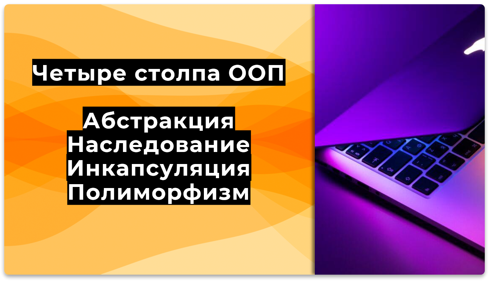
Абстракция - это выделение только важных характеристик объекта.
Например, у телефона основные свойства — это возможность звонить и принимать звонки. Его внутреннее устройство нас не интересует.
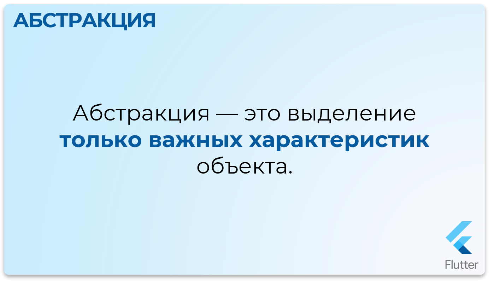
Наследование позволяет одному классу (дочернему) перенимать свойства и методы другого класса (родительского).
Например, все смартфоны — это телефоны, но они могут обладать дополнительными функциями, такими как запуск приложений.
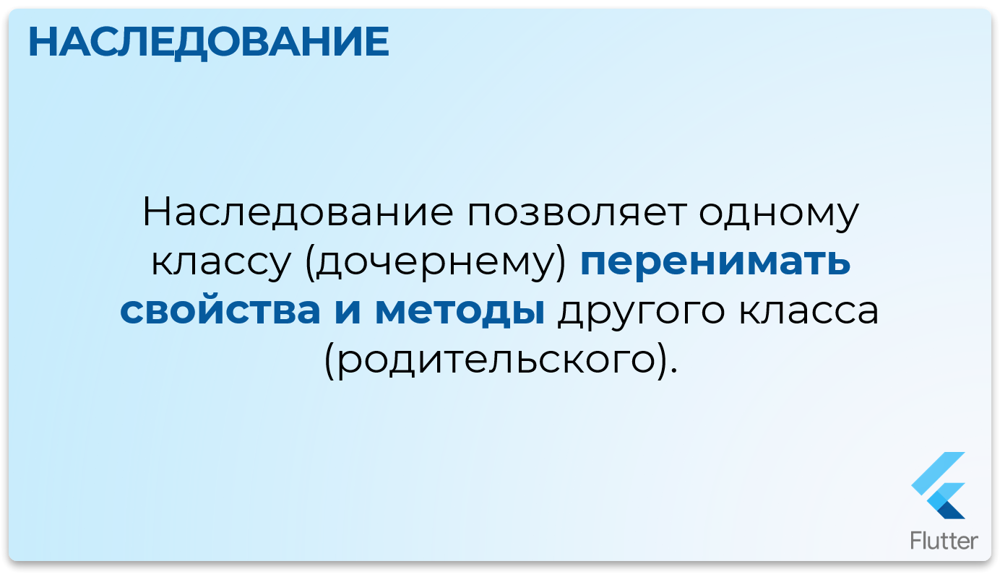
Инкапсуляция — это сокрытие внутренней реализации объекта.
Внешний мир взаимодействует с объектом через публичные методы, а не напрямую с его внутренними данными.
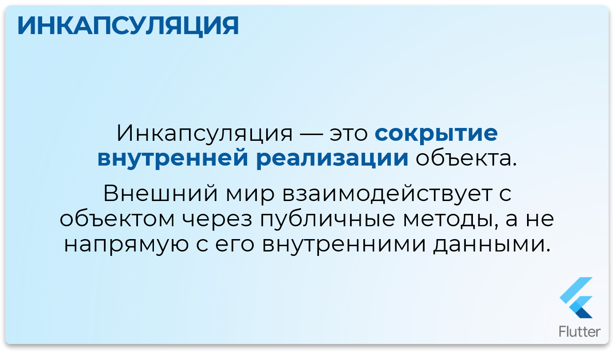
Полиморфизм позволяет одному и тому же методу работать по-разному в зависимости от объекта, который его вызывает.
Например, разные модели телефонов могут совершать вызов по-разному.
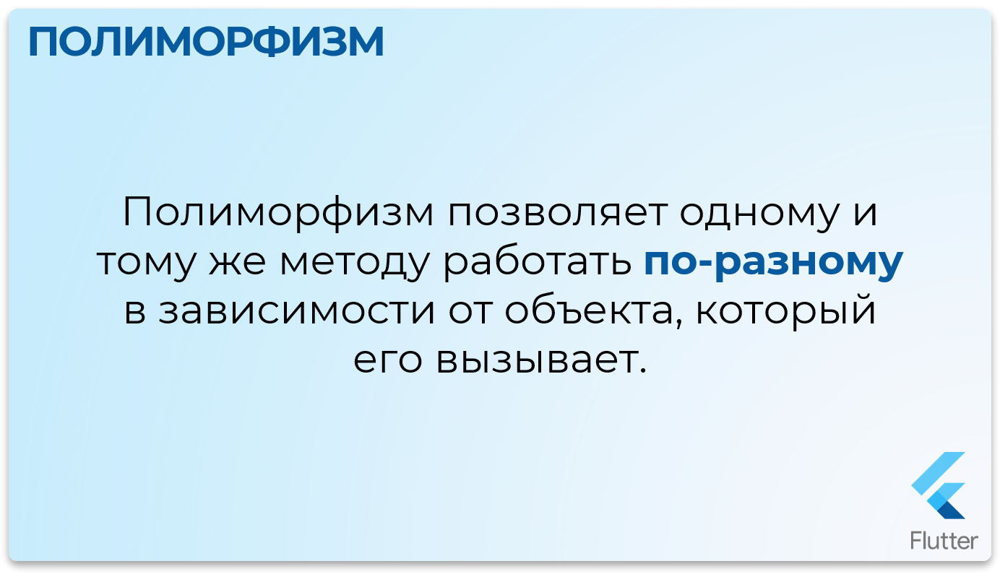
Абстракция
Продолжим рассматривать все эти принципы на примере RPG персонажей. Начнем с создания абстрактного класса AbstractCharacter
- Создадим в проекте папку
character - Добавим файл
character.dart, где будут находится только классы - Добавим файл
main.dart, где будет находится главная функцияmain
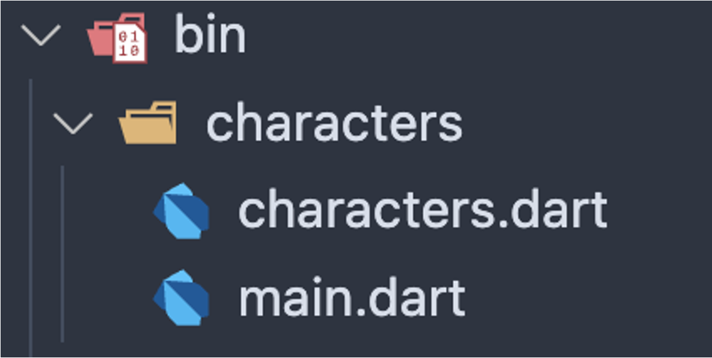
В нашем RPG мире все персонажи обладают базовыми способностями: атаковать и защищаться.
Имеют базовые характеристики имя, количество жизней, уровень.
Вместо того чтобы прописывать эти способности каждому типу (рыцари, маги, лучники), выделим общую абстракцию — базовый класс, описывающий основные функции любого персонажа.
Пропишем все классы внутри файла characters.dart
Dart - Абстрактный класс


abstract class AbstractCharacter {
final String name;
final int hp;
final int level;
AbstractCharacter(this.name, this.hp, this.level);
void attack();
void defend();
}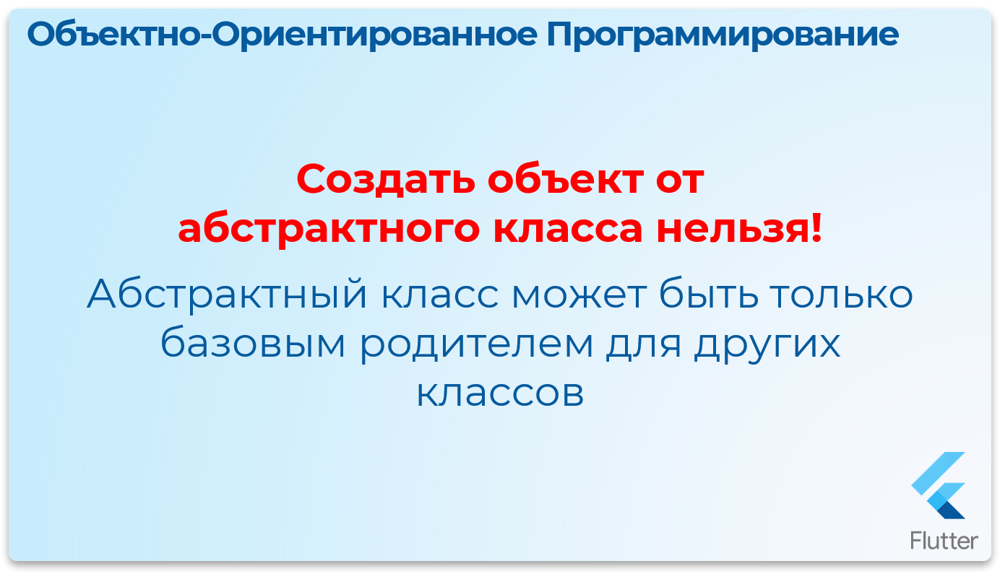
Абстрактный класс: Это шаблон, который задаёт базовые характеристики и поведение для всех наследников, но не может быть создан напрямую.
Методы без тела: Абстрактный метод (например, attack) будет реализован позже, в классах-наследниках.
Теперь, любой персонаж может быть создан на основе этой абстракции
Наследование
- Родительским классом с базовыми характеристиками общими для всех персонажей будет абстрактный класс персонажа
AbstractCharacter - От него унаследуют характеристики два других класса:
ВоиниМаг ВоиниМагбудут иметь полностью все характеристикиродителя+ своиуникальныехарактеристики.- У Мага, в свою очередь, тоже есть два наследника:
Темный МагиБелый Маг - Темный Маг и Белый Маг будут иметь полностью все характеристики своего
родителямага + полностью все характеристики родителя магаAbstractCharacter+ своиуникальныехарактеристики.
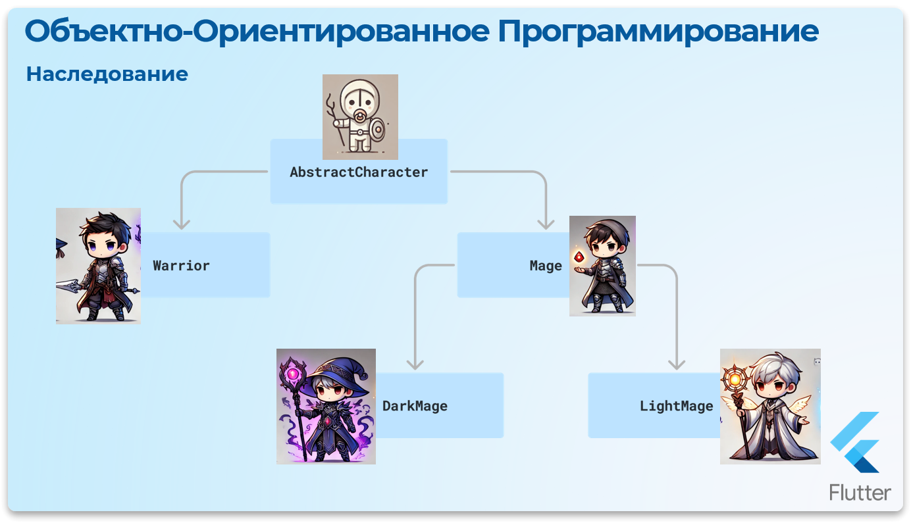
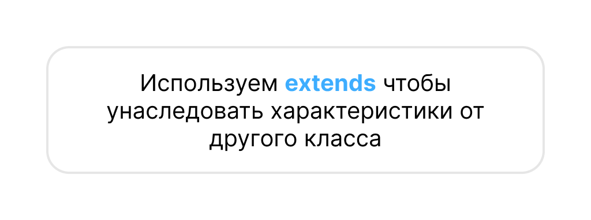
Используем extends чтобы унаследовать характеристики от другого класса
Файл characters.dart
Dart - Класс Warrior
// Класс Warrior наследуется от AbstractCharacter
class Warrior extends AbstractCharacter {
final int strength; // Сила воина
// Новый удобный синтаксис конструктора через super
Warrior(super.name, super.level, super.hp, this.strength);
// Переопределяем метод атаки
@override
void attack() {
print("Воин $name атакует врага с силой $strength!");
}
// Переопределяем метод защиты
@override
void defend() {
print("Воин $name ставит щит и защищается!");
}
}class Warrior extends AbstractCharacterозначает чтоWarriorунаследует все характеристикиAbstractCharacterfinal int strengthУникальное свойство для классаWarriorWarrior(super.name, super.level, super.hp, this.strength)вызов конструктора при наследовании. Обязательно нужно сначала вызывать конструктор родителя, потом конструктор наследника (черезsuper). Чтобы инициализировать свойства родительского класса, а потом уже класса потомка (черезthis).@override void attack()переопределяем родительские методы, т.е. берем методы родителя с тем же названием, но переделываем внутренний функционал, меняем форму (вид полиморфизма)
Далее попробуем создать новый объект класса Warrior и посмотрим какие у него теперь есть свойства и методы.
Файл main.dart
Dart - Использование Warrior
import 'characters.dart'; // 👈👈👈 импортируем файл для доступа к Warrior
void main() {
Warrior knight = Warrior("Арагорн", 100, 80, 20);
print(knight.name); // Арагорн
print(knight.hp); // 100
knight.attack(); // Воин Арагорн атакует врага с силой 20!
knight.defend(); // Воин Арагорн ставит щит и защищается!
}- Чтоб воспользоваться классами из другого файла, внутри файла
main.dartнужно импортировать файл с эти классамиimport 'characters.dart' - При обращении к объекту через точку, можно увидеть что теперь у воина, есть доступ для всех характеристик как своих, так и характеристик родительского класса!
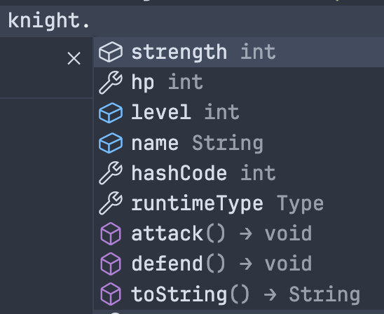
Можно обратить внимание, что кроме характеристик объекта, которые мы придумали сами, здесь есть ещё, например, hashCode или toString()
Откуда они взялись?
Класс Object и глубокое наследование
Object
У каждого объекта в языке Dart, существует, один главный, но по умолчанию невидимый, родительский класс Object
От класса Object наследуются общие методы, такие как hashCode и toString()
Таким образом, даже у нашего абстрактного базового класса AbstractCharacter есть "супер-родитель" — класс Object
hashCode— это свойство, которое возвращает целое число (хэш-код) для данного объекта. Хэш-код используется для сравнения объектовtoString— это метод, который возвращает строковое представление объекта.
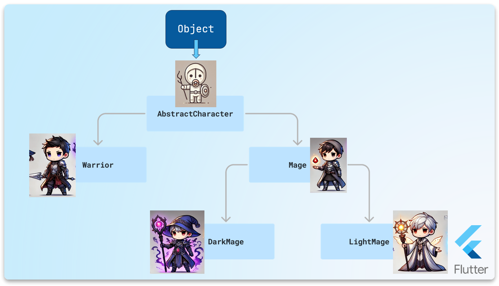
Переопределим метод toString для отображения информации о всех наших будущих персонажей
Файл characters.dart
Dart - Переопределение toString
abstract class AbstractCharacter {
final String name;
final int level;
final int hp;
AbstractCharacter(this.name, this.hp, this.level);
void attack();
void defend();
@override
String toString() {
super.toString();
return "Имя=$name, уровень=$level, здоровье=$hp";
}
}Теперь реализуем более глубокое наследование с помощью персонажа Мага
Файл characters.dart
Dart - Класс Mage
// Класс Mage наследуется от AbstractCharacter
class Mage extends AbstractCharacter {
int mana; // Магическая энергия
Mage(super.name, super.hp, super.level, this.mana);
// Метод для применения заклинания
void castSpell(int manaCost) {
if (mana <= 0 || mana < manaCost) {
print("Не могу колдовать! Мана закончилась! Ааааа!");
return;
}
print("$name кастует фаербол, затрачивая $manaCost маны!");
this.mana -= manaCost;
}
@override
void attack() {
print("Маг $name атакует врага магическим кинжалом");
}
@override
void defend() {
print("Маг $name кастует защитный купол");
}
}А теперь создадим еще наследников, для которых родителем будет обычный Маг
Файл characters.dart
Dart - Классы DarkMage и LightMage
class DarkMage extends Mage {
String darkPower = "Испепеление тьмой";
DarkMage(super.name, super.hp, super.level, super.mana);
void useDarkPower() {
print("$name использует $darkPower");
print("Всё в радиусе 100км было уничтожено!");
}
}
class LightMage extends Mage {
String healPower = "Исцеление";
LightMage(super.name, super.hp, super.level, super.mana);
void useLightPower() {
print("$name использует $healPower");
print("Теперь всё хорошо!");
}
}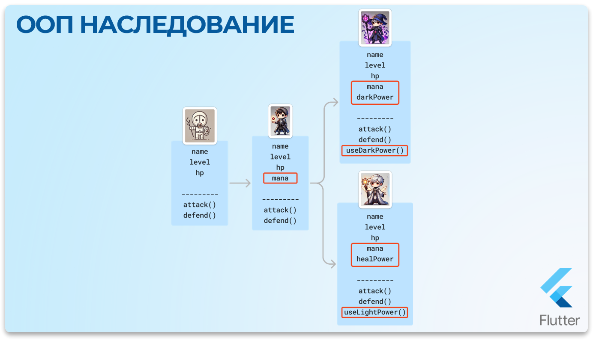
Создадим объекты персонажей темного и светлого магов и убедимся, что для всех доступны все характеристики от всех родительских классов.
Файл main.dart
Dart - Использование магов
import 'characters.dart';
void main() {
DarkMage darkWizard = DarkMage("Паймон", 200, 50, 1200);
darkWizard.attack();
darkWizard.defend();
darkWizard.castSpell(20);
darkWizard.useDarkPower();
LightMage lightWizard = LightMage("Василий", 80, 50, 2000);
lightWizard.defend();
lightWizard.useLightPower();
}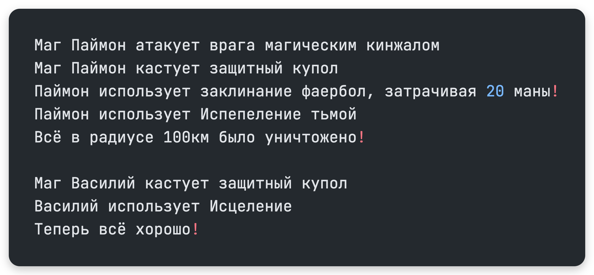
Инкапсуляция
Инкапсуляцию можно представить как состав из двух слов в капсуле
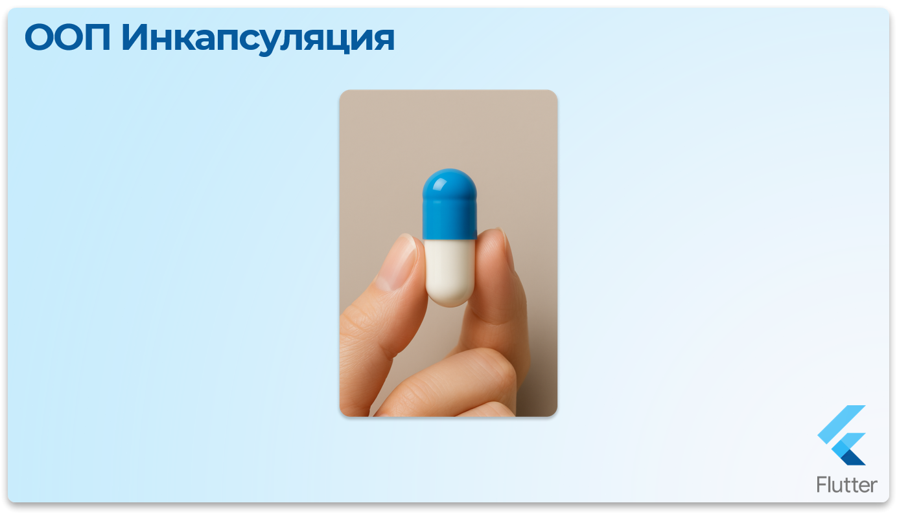
Можно упрощенно привести такой пример, что когда мы создали класс AbstractCharacter и добавили в него свойства и методы, то все эти характеристики мы инкапсулировали в пределах этого класса и поместили всё в защитную капсулу, как таблетку.
- Таким образом мы
связалисвойства и методы по смыслу, что они относятся к классуПерсонаж - Мы можешь
управлять доступомк свойствам и методам. Где-топриоткрыть капсулудля доступа из вне, или наоборотполностью закрыться. Приоткрыватькапсулу можно не для все характеристик сразу, авыборочнодля определенных свойств или методов.
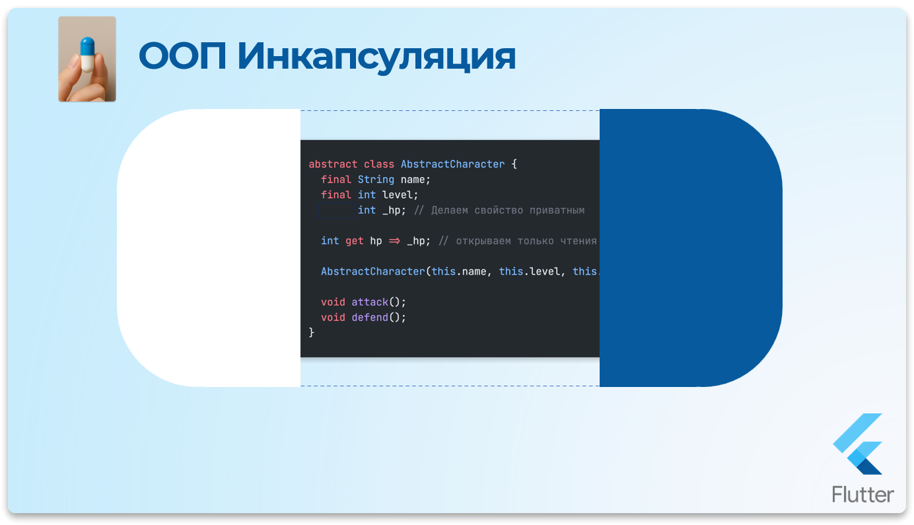
Файл characters.dart
Dart - Публичные свойства
abstract class AbstractCharacter {
final String name;
final int level;
final int hp;
AbstractCharacter(this.name, this.hp, this.level);
void attack();
void defend();
@override
String toString() {
super.toString();
return "Имя=$name, уровень=$level, здоровье=$hp";
}
}В данном случае данные инкапсулированны по смыслу с привязкой к классу данных.
Но все данные являются доступными из вне, т.е. публичными (public)
Хотя в данном случае и будет проблематично изменить значения свойств, потому что они являются final константами.
Но допустим, мы сделаем свойство hp обычной переменной и доступной.
Файл characters.dart
Dart - Изменяемое свойство hp
abstract class AbstractCharacter {
final String name;
final int level;
int hp;
//...
}В файле main.dart мы можем сделать что-то такое
Файл main.dart
Dart - Проблема с публичными данными
import 'characters.dart';
void main() {
Warrior knight = Warrior("Воин", 100, 50, 20);
knight.hp = 200; // Мы можем внаглую взять и изменить хп
print(knight.hp); // Есть возможность посмотреть данные хп
// А теперь можно сделать что-то читерское
// Взять и обнулить жизни персонажу ... что не очень хорошо
knight.hp = 0; // !!!
print(knight.hp); // Упс ...
}Не очень приятная получилась ситуация ... но можно воспользоваться инкапсуляцией и установить уровни доступа к данным.
- В языке
Dartсуществуют два модификатора доступаpublicиprivate - Все свойства и методы по умолчанию
public - Чтобы сделать свойства и методы приватными, нужно поставить
знак нижнего подчеркиванияперед именем - Приватность будет работать, только если класс в котором установлены приватные модификаторы, находится
в отдельном файле, а вызов объектав другом файле.
Файл characters.dart
Dart - Приватное свойство
abstract class AbstractCharacter {
final String name;
final int level;
int _hp; // Приватное свойство
AbstractCharacter(this.name, this._hp, this.level);
void attack();
void defend();
@override
String toString() {
super.toString();
return "Имя=$name, уровень=$level, здоровье=$_hp";
}
}Файл main.dart
Dart - Ошибка доступа к приватному свойству
import 'characters.dart';
void main() {
Warrior knight = Warrior("Воин", 100, 50, 20);
knight.hp = 0; // ! Ошибка доступа. Теперь так делать нельзя!
print(knight.hp); // Но и получить данные теперь тоже нельзя :(
}Полный Private
Отлично! Мы полностью закрыли доступ к свойству hp!
Часто это очень нужно и важно скрыть внутреннюю реализацию класса, чтобы ничего не сломать!
Но в данном, случае это как-то слишком радикально.
Хотелось бы немного гибкости, чтобы можно было посмотреть значения свойства и как-то обработать ситуацию когда кто-то решил присвоить значение ноль
Есть специальные механизмы для работы со свойствами класса
Setter- позволяет гибко управлятьинициализациейсвойстваGetter- позволяет гибко управлятьдоступомсвойства
Файл characters.dart
Dart - Getter и Setter
abstract class AbstractCharacter {
final String name;
final int level;
int _hp;
// геттер для доступа к закрытому полю
int get hp => _hp;
// сеттер для доступа к закрытому полю
set hp(int value) {
if (value <= 0) {
print("Здоровье не может быть отрицательным!");
print("И обнулять тоже читерство! :)");
return;
} else {
_hp = value;
}
}
AbstractCharacter(this.name, this._hp, this.level);
void attack();
void defend();
@override
String toString() {
super.toString();
return "Имя=$name, уровень=$level, здоровье=$_hp";
}
}Файл main.dart
Dart - Использование getter и setter
import 'characters.dart';
void main() {
Warrior knight = Warrior("Воин", 100, 50, 20);
knight.hp = 200;
knight.hp = 0;
print(knight.hp);
}
// Здоровье не может быть отрицательным!
// И обнулять тоже читерство! :)
// 200Геттерызащищают данные, добавляя слой обработки перед их возвратом.Сеттерыдают возможность валидировать или контролировать данные, которые присваиваются свойству.
Полиморфизм
Полиморфизм можно разбить на два слова: "поли" — много, "морфизм" — форм.
Это позволяет одному и тому же коду принимать множество форм и вести себя по-разному в зависимости от ситуации.
Чтобы понять, зачем это нужно, давай начнём с примера. Вернёмся к нашим игровым персонажам. Мы создали базовый класс AbstractCharacter, но нужно, чтобы у разных классов-наследников (например, воинов, магов и лучников) были свои уникальные способности.
Код без полиморфизма — сплошной хаос!
Потому что мы с вами, ещё сами того не понимая, уже использовали правильный подход к созданию классов с полиморфизмом, но рассамотрим пример без применения этого подхода.
Представим, что у нас есть два разных класса персонажей: Warrior и Mage. У каждого из них своя реализация метода attack(). Теперь мы хотим вызвать атаку для всех персонажей, но нам придётся учитывать их типы.
Файл characters.dart
Dart - Код без полиморфизма
class Warrior {
final String name;
final int strength;
Warrior(this.name, this.strength);
void attack() {
print("$name атакует мечом с уроном $strength!");
}
}
class Mage {
final String name;
final int mana;
Mage(this.name, this.mana);
void attack() {
print("$name использует магию с силой $mana!");
}
}Файл main.dart
Dart - Проблема без полиморфизма
void main() {
Warrior knight = Warrior("Рыцарь", 50); // Создаём рыцаря
Mage wizard = Mage("Маг", 30); // Создаём мага
String rouge = "Разбойник";
// Представим, что мы собираем их в команду
List team = [knight, wizard, rouge];
// Попробуем у каждого вызывать метод attack()
for (var character in team) {
character.attack();
}
}И будет конечно же ошибка! Потому что к нам в команду попал, объект Разбойник у которого нет, метода attack()
Нужно теперь делать дополнительные проверки для каждого класса.
Файл main.dart
Dart - Решение без полиморфизма
void main() {
Warrior knight = Warrior("Рыцарь", 50); // Создаём рыцаря
Mage wizard = Mage("Маг", 30); // Создаём мага
String rouge = "Разбойник";
// Представим, что мы собираем их в команду
List team = [knight, wizard, rouge];
for (var character in team) {
// Проверяем, кто именно находится в команде
if (character is Warrior) {
// Если рыцарь, вызываем attack() рыцаря
character.attack();
} else if (character is Mage) {
// Если маг, вызываем attack() мага
character.attack();
} else {
print("Неизвестный персонаж в команде!");
}
}
}Результат:
Результат выполнения:
Рыцарь атакует мечом с уроном 50!
Маг использует магию с силой 30!
Неизвестный персонаж в команде!Это простой пример, где можно сразу заметить ошибку до компиляции кода, но в реальном приложении, это будет уже проблематично!
У нас не будет гарантии, например, что все объекты которые мы обрабатываем будут иметь, вызываемые методы!
Эту проблему в данном случае, решает абстрактный класс, который предоставляет одинаковый интерфейс для взаимодействия между всеми объектами.
- У абстрактного класса Персонаж есть метод
attack() - Все другие классы которые являются потомками абстрактного класса Персонаж, гарантированно имеют методы
attack() - И самое главное реализация (
форма) этих методов будетуникальная Один метод attack(), номножество формего реализации -Полиморфизм
Повторим код теперь с применением полиморфизма
Мы определяем базовый класс с методом attack()
Файл characters.dart
Dart - Абстрактный класс для полиморфизма
abstract class AbstractCharacter {
final String name;
final int level;
int _hp;
AbstractCharacter(this.name, this._hp, this.level);
void attack(); // Абстрактный метод — каждая реализация своя!
}А теперь у каждого потомка этого класса будет своя реализация метода attack()
Файл characters.dart
Dart - Полиморфные классы
class Warrior extends AbstractCharacter {
final int strength;
Warrior(super.name, super.hp, super.level, this.strength);
@override // 👈👈👈 переопрделяем метод
void attack() {
print("$name атакует мечом! Урон: ${strength * level}");
}
}
class Mage extends AbstractCharacter {
final int mana;
Mage(super.name, super.hp, super.level, this.mana);
@override // 👈👈👈 переопрделяем метод
void attack() {
print("$name использует заклинание! Магическая сила: ${mana * level}");
}
}Теперь всё гораздо проще. Мы можем собрать всех персонажей в общий список и использовать один вызов attack() для всех:
Файл main.dart
Dart - Полиморфизм в действии
void main() {
List<AbstractCharacter> team = [
Warrior("Рыцарь", 100, 50, 20),
Mage("Маг", 80, 30, 50),
Warrior("Паладин", 120, 70, 25),
];
// Полиморфизм в действии:
for (AbstractCharacter character in team) {
character.attack(); // Вызовется своя реализация у каждого!
}
}Гарантия и Гибкость работы
Указание типа AbstractCharacter гарантирует, что будут использоваться только те объекты у которых есть нужный метод attack()
Если мы добавим нового наследника (например, лучника), он автоматически подхватится:
Файл characters.dart
Dart - Новый класс Archer
class Archer extends AbstractCharacter {
final int agility;
Archer(super.name, super.hp, super.level, this.agility);
@override
void attack() {
print("$name стреляет из лука с точностью $agility!");
}
}Просто добавим его в список team, и всё будет работать:
Файл main.dart
Dart - Расширение команды
void main() {
List<AbstractCharacter> team = [
Warrior("Рыцарь", 100, 50, 20),
Mage("Маг", 80, 30, 50),
Warrior("Паладин", 120, 70, 25),
];
Archer ranger = Archer("Лучник", 40, 100, 100);
team.add(ranger);
// Полиморфизм в действии:
for (AbstractCharacter character in team) {
character.attack(); // Вызовется своя реализация у каждого!
}
}Результат:
Результат выполнения:
Рыцарь атакует мечом! Урон: 1000
Маг использует заклинание! Магическая сила: 1500
Паладин атакует мечом! Урон: 1750
Лучник стреляет из лука с точностью 100!